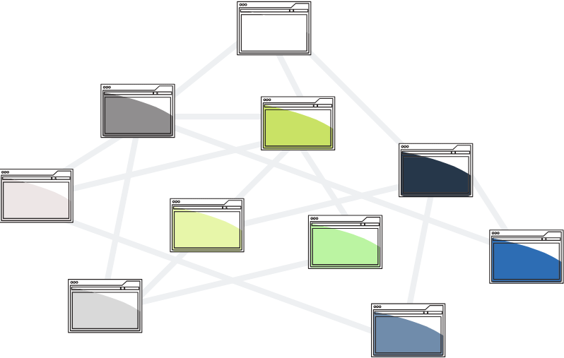
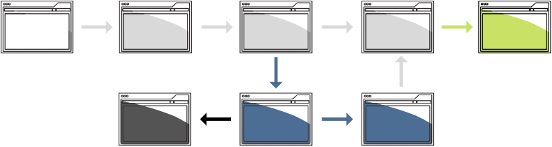
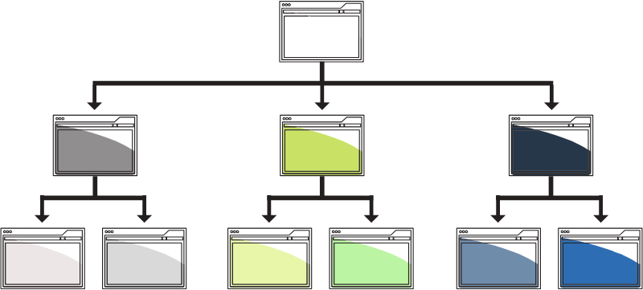

Organization systems
Read time: 3 minutes
On this page
Matrix structures
What it is
Matrix structures are networks of interconnected concepts and relationships which let the users explore the content along the paths that make sense to them.
When to use
When content needs to be discovered in many different ways and relationships are much more fluid, matrices would be the best way to connect information.
Note: Within this structure, there are also different grouping methods you could use (such as alphabetical, temporal, format or topic-based, etc.).
When to be careful
Matrix structures are the most difficult to design well. Interlinked paths need to be created through rigorous work with hypertext and metadata.
While these paths could be built through social (crowd-sourced) or formal tagging, to be effective and sustainable, matrix structures should begin with effective content modeling.
Examples
On Canada.ca, tax content is structured under Canada.ca > Taxes. However, other sections of Canada.ca link over to the tax content, as necessary. This includes:
- Canada.ca > Money and finances > Education funding > (link to RESP tax content)
- Canada.ca > Benefits > Disability benefits > (link to Child Disability Benefit tax content)
- Canada.ca > Business and industry > (link to Business taxes)
- Canada.ca > Departments and agencies > Canada Revenue Agency > (link to Taxes)
Sequential structures
What it is
Sequential structures lead users through a step-by-step process.
When to use
Sequential structures aim to show a specific process, such as making a purchase or completing an online course.
Example: Introduction > Chapter 1 > Chapter 2 > Summary
This approach could be suitable for tasks that are well defined and have a clear goal for the user.
Note: Within this structure, there are also different grouping methods you could use (such as alphabetical, temporal, format or topic-based, etc.).
When to be careful
It's extremely frustrating when a process has missing steps or when competing sources of information are contradictory. Before designing a sequence, do a thorough content audit and identify content that will need to be merged and reworked to create a single, comprehensive and logical sequence.
Examples
- Registering for an account
- Filling out a survey
- Applying for something
- Online check-out
Hierarchical structures
What it is
Hierarchical structures group information into broader and then narrow categories, where there is no interconnectivity between the categories.
When to use
Imagine an organizational chart, a family tree, a menu in a restaurant, or a shopping list with different categories of food and specific items underneath.
Example: Produce > vegetables > leafy greens > spinach
Different levels of information convey importance through top-down relationships. It also effectively illustrates the whole and its parts.
Note: Within this structure, there are also different grouping methods you could use (such as alphabetical, temporal, format or topic-based, etc.).
When to be careful
While this type of structure is often easy to build and read, it doesn't work well for information full of complex, interconnected relationships, and nuances.
Another high risk is grouping information using language and structure familiar to the organization but not the users (referred to as the disease of familiarity by Richard Saul Wurman) . This can result in citizens not being able to get the information they need and the government having to spend more on support calls due to content debt.
Examples
- Organizational chart
- Store/office locator
All course sections
- Date modified: